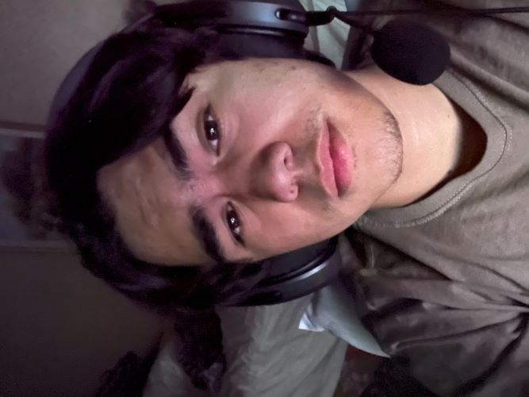
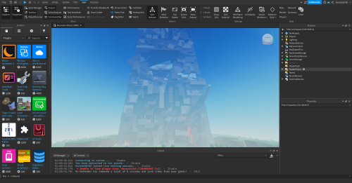
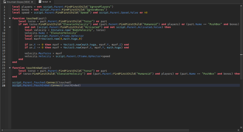
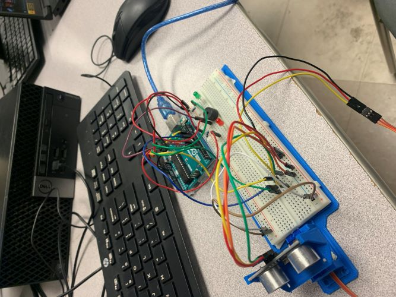

Hello my name is Kalen Currie, I am currently in grade 12 planning to go to collage to study in a course called
electromechanical engineering technology - mechatronics. My future goals in the technology feild is to persue
in a engineering field for a fun and interesting job. 
My experience in the tech field is quite all over the place. At the moment I am in the robotics club. Last year in the 2023 robotics season
I was part of the programming team. I did some coding for the team but sadly was not used in the final robot code, but thats fine!
It was fun and I definity learned one thing or two.
One other cool thing kinda in the tech field is that I created my own game. The game I created was created on the ROBLOX platfrom.
I used the coding language Lua when Creating the game. It was fun creating the game and coding it but I eventually got burnned out.  
One final thing I made is last year in Grade 11, me and a group created a type of radar that scans for objects infront of a
ultrasonic sensor. The main purpose of this was to catch anyone trying to leave the classroom without the teacher knowlage so that teachers will
hear a noise knowing someone is trying to leave. 